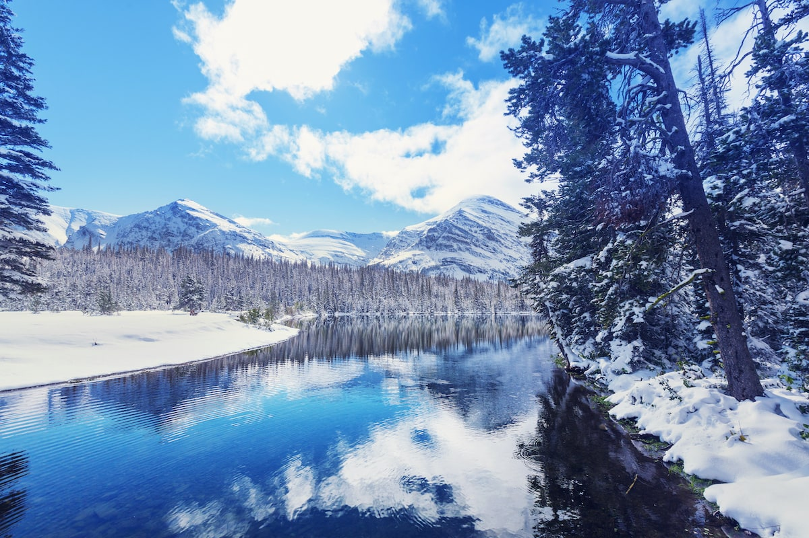

 Skiing is another wintery favorite for many Montana's. Hitting the slopes or just sitting down and enjoying a hot cup of joy watching little kids crash from the lodge provides some releif from the stressful driving conditions and the antarctic climate.
Snow shoeing in Montana is another great way to get out and experience the outdoors that we are so famous for as a state. Hiking through a virtual winter wonderland is and important way to enjoy Montana in all four seasons.
Sledding is a great way to get out in Montana in the winter. You can witness many Montana children waiting for the first few snowflakes to grab their sled and hit the hills.